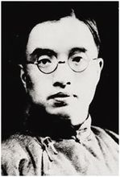
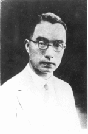
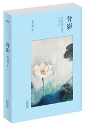
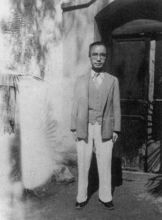

朱自清（1898年11月22日—1948年8月12日），原名自华，号秋实，后改名自清，字佩弦。中国现代散文家、诗人、学者、民主战士。
原籍浙江绍兴，出生于江苏省东海县（今连云港市东海县平明镇），后随祖父、父亲定居扬州，自称“我是扬州人”。1916年中学毕业并成功考入北京大学预科。1919年开始发表诗歌。1928年第一本散文集《背影》出版。1932年7月，任清华大学中国文学系主任。1934年，出版《欧游杂记》和《伦敦杂记》。1935年，出版散文集《你我》。1948年8月12日因胃穿孔病逝于北平，年仅50岁。
| 中文名 | 朱自清 | 出生地 | 江苏东海县 |
| 外文名 | Zhu Ziqing | 出生日期 | 1898年11月22日 |
| 别 名 | 原名自华、号秋实、字佩弦 | 逝世日期 | 1948年8月12日 |
| 国 籍 | 中国 | 职 业 | 散文家、诗人、学者、民主战士 |
| 民 族 | 汉族 | 毕业院校 | 北京大学 |
| 代表作品 | 《春》《绿》《背影》《荷塘月色》《匆匆》 |
1898年11月22日，出生于江苏省东海县（今连云港市东海县平明镇）。六岁随家人迁居扬州。在那里度过了童年和少年时代。他自幼继承父辈的家学渊源，受到士大夫家庭的影响，逐渐养成“整饬而温和、庄重而矜持”的文人气质。
1912年进入江苏省立第八中学（今扬州中学）学习。
1916年中学毕业并成功考入北京大学预科，1917年升入本科哲学系。在北大期间，朱自清积极参加五四爱国运动，嗣后又参加北大学生为传播新思想而组织的平民教育讲演团。并与武仲谦结婚。1917年报考北京大学时改用的，典出《楚辞 •卜居》“宁廉洁正直以自清乎”，意思是廉洁正直使自己保持清白。朱自清选“自清”作为自己的名字，其意是勉励自己在困境中不丧志，不同流合污，保持清白。他同时还取字“佩弦”。“佩弦”出自《韩非子•观行》“董安于之性缓，故佩弦以自急”，意为弓弦常紧张，性缓者佩弦以自警。
1919年开始发表诗歌，作为新文学运动初期的诗人之一，他以清新明快的诗作，在诗坛上显出自己的特色。
1919年2月出版他的处女作诗集《睡吧，小小的人》。
1920年修完课程，北京大学哲学系提前毕业。毕业后，先在杭州第一师范，后回到母校江苏省立第八中学（今扬州中学）教授国文、哲学，并任教学主任。继续参加新文学运动，成为文学研究会的早期会员。还参与发起新文学史上第一个诗歌团体“中国新诗社”和创办第一个诗歌杂志《诗》月刊等工作，支持由青年学生组成的湖畔诗社及晨光文学社的活动，为开拓新诗的道路付出了辛勤的劳动。1921年参加文学研究会，是“五四”时期重要的作家之一。
1922年，他只身一人来到浙江台州第六师范学校任教，与俞平伯等人创办《诗》月刊，积极参加新文学运动。1925年8月到清华大学任教，开始研究中国古典文学，创作则以散文为主。
1923年朱自清发表了近300行的抒情长诗《毁灭》，表明自己对生活的严肃思考和“一步步踏在土泥上，打上深深的脚印”，这种进取不懈的人生态度，在当时有较大影响。
1924年，诗和散文集《踪迹》出版。1925年，朱自清任清华大学中文系教授，开始从事文学研究，创作方面则转为以散文为主。
1927年大革命失败，中国的社会矛盾进一步激化。“四•一二”政变给朱自清思想带来极大的震撼，其思想和创作发生很大转折。他的作品不再限于日常生活的抒情小品，转向抨击现实丑恶的杂文。
1928年第一本散文集《背影》出版，集中所作，均为个人真切的见闻和独到的感受，并以平淡朴素而又清新秀丽的优美文笔独树一帜。
1931年8月，朱自清留学英国，进修语言学和英国文学；后又漫游欧洲五国；1932年7月回国，任清华大学中国文学系主任，与闻一多同事一起论学。
1932年8月20日，朱自清携陈竹隐回扬州省亲。朱自清和他的妻子在上海举办婚礼。1932年8月底，朱自清赴欧洲游学。
1934年，出版《欧游杂记》和《伦敦杂记》，是用《背影》封面印象的笔法写成的两部游记。
1935年编辑《〈中国新文学大系〉诗集》并撰写《导言》。翌年出版散文集《你我》，其中，《给亡妇》娓娓追忆亡妻武钟谦生前种种往事，情意真挚，凄婉动人。这一时期，朱自清散文的情致虽稍逊于早期，但构思的精巧、态度的诚恳仍一如既往，文学的口语化则更为自然、洗练。
抗日战争爆发后，朱自清随清华大学南下长沙，1938年3月到昆明，任北京大学、清华大学、南开大学合并的西南联合大学中国文学系主任，并当选为中华全国文艺界抗敌协会理事。抗日战争的艰苦岁月里，他以认真严谨的态度从事教学和文学研究，曾与叶圣陶合著《国文教学》等书。
1940年，朱自清在成都目睹饥民哄抢米仓，愤然写下《论吃饭》一文，犀利地指责当权者无视人民温饱，支持人们为维护自己的天赋人权而斗争。
1945年抗战胜利后，国民党政府发动内战，镇压民主运动。特别是1946年7月，朱自清的好友李公朴、闻一多的先后遇害，都使他震动和悲愤。于是他出席成都各界举行的李、闻惨案追悼大会，并报告闻一多生平事迹。
1946年10月，他从四川回到北平，于11月担任“整理闻一多先生遗著委员会”召集人。
1946年10月，经过漫长曲折的道路，在黑暗现实的教育和爱国民主运动的推动下，他成为革命民主主义战士。在反饥饿、反内战的实际斗争中，他身患重病，签名于《抗议美国扶日政策并拒绝领取美援面粉宣言》，并嘱告家人不买配售面粉，始终保持着一个正直的爱国知识分子的气节和情操。
1948年8月12日，朱自清因患严重的胃病（严重的胃溃疡导致的胃穿孔）逝世，享年50岁。
----摘自百度百科